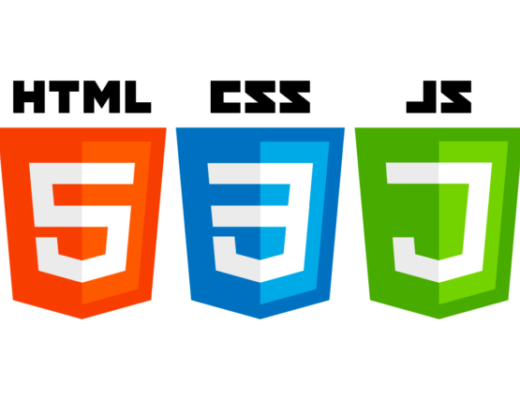

Wickedly Good Spagehtti with Sausage
This is my go to meal for my family when I'm in a rush, but also want to make something hearty. Originally, this was my husband's recipe...Read More

Journey into Front End Web Development
I've always heard that front-end web development was easier than back-end, so I thought learning it would be a piece of cake. Especially since I had spent some time on my own learning HTML5 and CSS3, boy was I wrong...Read More